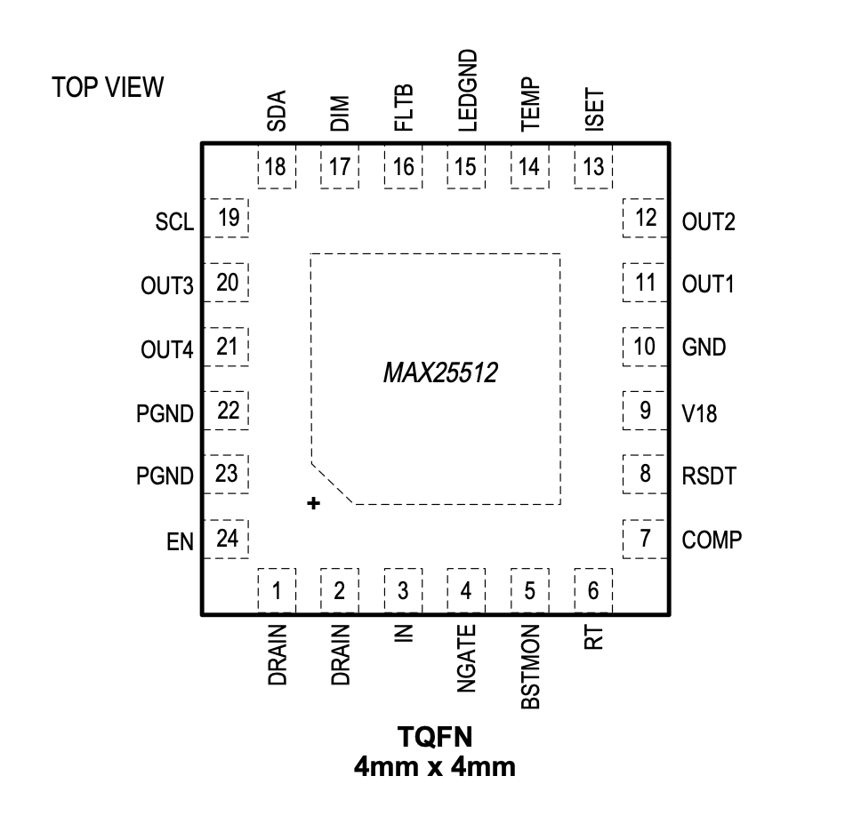

MAX25510/MAX25511
Pin Description
| PIN | NAME | FUNCTION |
|---|---|---|
| 1,2 | DRAIN | Drain Connection of Internal Switching Power nMOSFET. Connect to the external inductor and rectifier diode. |
| 3 | IN | Input Voltage. Connect to protected battery. Bypass IN with a minimum of 2.2μF in parallel with 0.1μF placed close to the pin. |
| 4 | NGATE | Gate Connection for External Series nMOSFET. Driven by the internal charge pump. |
| 5 | BSTMON | Boost Voltage Monitoring Input. Connect a resistor-divider from the boost converter output to GND with its midpoint connected to the BSTMON pin in order to set the maximum boost output voltage. |
| 6 | RT | Oscillator Timing Resistor Connection. Connect a timing resistor (RT) to GND to program the switching frequency. Apply an AC-coupled external clock at RT to synchronize the switching frequency with an external clock. |
| 7 | COMP | Switching Converter Compensation Input. Connect the compensation network from COMP to GND for current-mode control |
| 8 | RSDT | LED Short-Detection Threshold-Adjust Input. Connect a resistive divider from V18 to RSDT and GND to program the LED short-detection threshold. Connect RSDT directly to V18 to disable LED short detection. |
| 9 | V18 | Output of Internal 1.8V Regulator. Connect 1μF and 0.1μF capacitors from V18 to GND with the 0.1μF capacitor placed closest to the pin. |
| 10 | GND | Signal GND. GND is the current return path connection for the low-noise analog signals. Connect GND, LEDGND, and PGND at a single point. |
| 11 | OUT1 | LED String Cathode Connection 1. OUT1 is the open-drain output of the linear current sink that controls the current through the LED string connected to OUT1. OUT1 sinks up to 120mA. |
| 12 | OUT2 | LED String Cathode Connection 2. OUT2 is the open-drain output of the linear current sink that controls the current through the LED string connected to OUT2. OUT2 sinks up to 120mA. If OUT2 is unused, connect a 10kΩ resistor from OUT2 to LEDGND. |
| 13 | ISET | LED Current-Adjust Input. Connect a resistor (RISET) from ISET to GND to set the current through each LED string (ILED), according to the formula ILED = 1500/RISET. Place the resistor close to the pin to avoid parasitic capacitance. |
| 14 | TEMP | Temperature Sensor Input. To implement LED current reduction at high temperatures connect an NTC temperature sensor to GND with resistors from the NTC to TEMP and to V18. If unused, connect TEMP to V18 |
| 15 | LEDGND | LED Ground. LEDGND is the return path connection for the linear current sinks. Connect GND, LEDGND, and PGND at a single point. |
| 16 | FLTB | Open-Drain Fault Output. FLTB asserts low when a fault is detected. Connect a pull-up resistor from FLTB to a logic supply of 5V or lower. |
| 17 | DIM | Digital PWM Dimming Input. Apply a PWM signal to DIM for LED dimming control. Connect DIM to a logic supply of 5V or lower if dimming control is not used. |
| 18 | ADIM | Analog Dimming Input. Apply a PWM signal to ADIM to set the level of analog dimming. Connect ADIM to GND if analog dimming is not used. |
| 19 | SET | Option Setting Input. Connect a resistor to this pin to select phase/shifting on/off, spread spectrum on/off, and slow/fast soft/start timing. Total of eight options. |
| 20 | OUT3 | LED String Cathode Connection 3. OUT3 is the open-drain output of the linear current sink that controls the current through the LED string connected to OUT3. OUT3 sinks up to 120mA. If OUT3 is unused, connect a 10kΩ resistor from OUT3 to LEDGND. |
| 21 | OUT4 | LED String Cathode Connection 4. OUT4 is the open-drain output of the linear current sink that controls the current through the LED string connected to OUT4. OUT4 sinks up to 120mA. If OUT4 is unused, connect a 10kΩ resistor from OUT4 to LEDGND. |
| 22,23 | PGND | Power Ground. PGND is the DRAIN current return path connection. Connect GND, LEDGND, and PGND at a single point. |
| 24 | EN | Enable Input. Connect EN to logic-high for normal operation. When EN is taken low, the device is disabled after a delay of tEN_OFF. Do not leave the EN input open. |
MAX25512

Pin Description
| PIN | NAME | FUNCTION |
|---|---|---|
| 1,2 | DRAIN | Drain Connection of Internal Switching Power nMOSFET. Connect to the external inductor and rectifier diode. |
| 3 | IN | Input Voltage. Connect to protected battery. Bypass IN with a minimum of 2.2μF in parallel with 0.1μF placed close to the pin. |
| 4 | NGATE | Gate Connection for External Series nMOSFET. Driven by the internal charge pump. |
| 5 | BSTMON | Boost Voltage Monitoring Input. Connect a resistor-divider from the boost converter output to GND with its midpoint connected to the BSTMON pin in order to set the maximum boost output voltage. |
| 6 | RT | Oscillator Timing Resistor Connection. Connect a timing resistor (RT) to GND to program the switching frequency. Apply an AC-coupled external clock at RT to synchronize the switching frequency with an external clock. |
| 7 | COMP | Switching Converter Compensation Input. Connect the compensation network from COMP to GND for current-mode control |
| 8 | RSDT | LED Short-Detection Threshold-Adjust Input. Connect a resistive divider from V18 to RSDT and GND to program the LED short-detection threshold. Connect RSDT directly to V18 to disable LED short detection. |
| 9 | V18 | Output of Internal 1.8V Regulator. Connect 1μF and 0.1μF capacitors from V18 to GND with the 0.1μF capacitor placed closest to the pin. |
| 10 | GND | Signal GND. GND is the current return path connection for the low-noise analog signals. Connect GND, LEDGND, and PGND at a single point. |
| 11 | OUT1 | LED String Cathode Connection 1. OUT1 is the open-drain output of the linear current sink that controls the current through the LED string connected to OUT1. OUT1 sinks up to 120mA. |
| 12 | OUT2 | LED String Cathode Connection 2. OUT2 is the open-drain output of the linear current sink that controls the current through the LED string connected to OUT2. OUT2 sinks up to 120mA. If OUT2 is unused, connect a 10kΩ resistor from OUT2 to LEDGND. |
| 13 | ISET | LED Current-Adjust Input. Connect a resistor (RISET) from ISET to GND to set the current through each LED string (ILED), according to the formula ILED = 1500/RISET. Place the resistor close to the pin to avoid parasitic capacitance. |
| 14 | TEMP | Temperature Sensor Input. To implement LED current reduction at high temperatures connect an NTC temperature sensor to GND with resistors from the NTC to TEMP and to V18. If unused, connect TEMP to V18 |
| 15 | LEDGND | LED Ground. LEDGND is the return path connection for the linear current sinks. Connect GND, LEDGND, and PGND at a single point. |
| 16 | FLTB | Open-Drain Fault Output. FLTB asserts low when a fault is detected. Connect a pull-up resistor from FLTB to a logic supply of 5V or lower. |
| 17 | DIM | Digital PWM Dimming Input. Apply a PWM signal to DIM for LED dimming control. Connect DIM to a logic supply of 5V or lower if dimming control is not used. |
| 18 | SDA | Bidirectional I2C Data Pin. Connect a pull-up resistor from this node to the logic supply voltage. |
| 19 | SCL | I2C Clock Input Pin. Connect a pull-up resistor from this node to the logic supply voltage. |
| 20 | OUT3 | LED String Cathode Connection 3. OUT3 is the open-drain output of the linear current sink that controls the current through the LED string connected to OUT3. OUT3 sinks up to 120mA. If OUT3 is unused, connect a 10kΩ resistor from OUT3 to LEDGND. |
| 21 | OUT4 | LED String Cathode Connection 4. OUT4 is the open-drain output of the linear current sink that controls the current through the LED string connected to OUT4. OUT4 sinks up to 120mA. If OUT4 is unused, connect a 10kΩ resistor from OUT4 to LEDGND. |
| 22,23 | PGND | Power Ground. PGND is the DRAIN current return path connection. Connect GND, LEDGND, and PGND at a single point. |
| 24 | EN | Enable Input. Connect EN to logic-high for normal operation. When EN is taken low, the device is disabled after a delay of tEN_OFF. Do not leave the EN input open. |